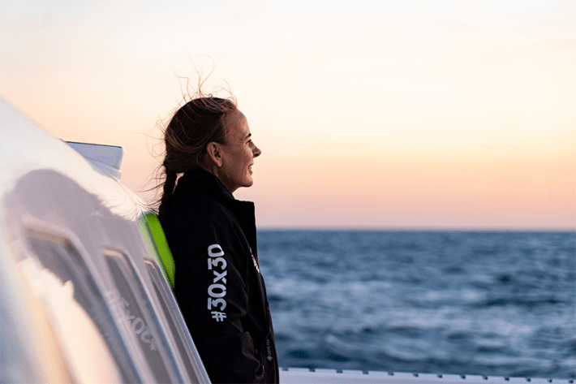
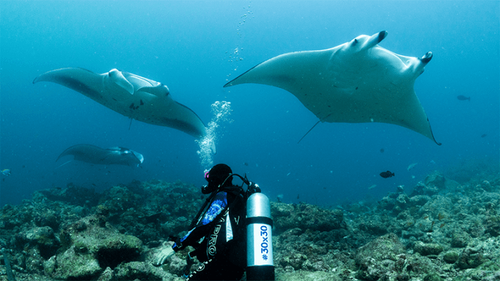

The ocean has always held a mirror to human ambition—its vastness inviting both wonder and exploitation. Few individuals embody that push and pull with as much conviction and clarity as Dona Bertarelli. A world-renowned sailor, philanthropist, and ocean advocate, she has navigated some of the planet’s most treacherous waters—not simply for sport or record, but to reforge our relationship with the sea itself.
Bertarelli’s story is one of transformation. Known first for her achievements in business and competitive sailing, her trajectory has evolved into something much deeper: a mission to safeguard the ocean’s future. She has seen firsthand the fragility and power of marine ecosystems, from the brutal headwinds rounding Cape Horn to the eerie silence of vast high seas where no nation claims jurisdiction and few laws apply. These experiences have not only intensified her reverence for nature, but they’ve also shaped a philosophy of action rooted in humility, responsibility, and interdependence.
Bertarelli speaks with Nautilus at a moment of profound reckoning for the planet. As the world prepares for the UN Ocean Conference in Nice, France this month—arguably the most consequential ocean gathering of the decade—her voice is one of moral urgency, lived experience, and undimmed hope.
At the heart of her message is a call to reimagine how we relate to the natural world: not as owners or users, but as caretakers. She speaks not in abstract terms, but from the helm of a trimaran battered by storms, from the decks of scientific expeditions she supports, and from the conviction that we still have time to protect what matters most—if we act courageously and consistently. To feel the awe and the urgency. To see the ocean not as an afterthought, but as the central thread in the web of life. And to remember, as Bertarelli reminds us, that safeguarding the sea is not just environmentalism—it is survival.

A SAILOR’S LIFE: Sailing causes Dona Bertarelli to truly feel “just how small we are in the grand scheme of things.” Being at sea “challenges you to think about your place in the world, your impact on it, and what really sustains you,” she says. Courtesy of Sails of Change / G. Lebec.
You’ve been a leading voice in championing protection for the high seas. Why?
The high seas, those vast areas beyond national jurisdiction, cover nearly half the planet. And yet, they remain largely unprotected and vulnerable to exploitation. What happens in these waters affects us all—the ocean knows no borders, and what flows from the mountains to the sea connects every ecosystem on Earth.
What do you see as the most urgent threats to marine ecosystems today?
Biodiversity, on land and in the ocean, continues to decline at an alarming rate. The latest research shows that among monitored wildlife, populations have dropped by an average of 70 percent since 1970. In the ocean, more than a third of marine mammals are at risk, coral reefs are bleaching more frequently, and fish stocks remain dangerously overfished and depleted.
The 30x30 target—protecting 30 percent of land and sea by 2030—is our most powerful tool to reverse this loss. But we still have far to go, as only 8.3 percent of the world’s ocean is designated as Marine Protected Areas, and just 2.7 percent is highly or fully protected.
What’s more, the ocean is uniquely vulnerable. It faces overfishing, rising temperatures and acidification, pollution, and the continued use of devastating harvesting tools like bottom trawling, often even within so-called Marine Protected Areas. These manmade pressures are accelerating, driven by short-term thinking and fragmented ocean governance.
People protect what they understand, and they fight for what they feel connected to.
How important is storytelling in translating ocean science data into public action?
Science is essential for understanding nature and shaping effective conservation. But science alone doesn’t move people, stories do. That’s why I support efforts that connect data with emotion, turning knowledge to action.
When we invest in ocean research, we’re not just collecting information, we’re building bridges between science and society. That belief inspired my support for Biodiversity Through the Lens, a photography exhibition presented at Art Basel Paris last year in collaboration with Nautilus, Discover Earth, and UNESCO. It brought together art, nature, and advocacy in a way that speaks to everyone, regardless of language or background. Photography has a unique power to capture not only the beauty of our natural world, but also the emotional connection we share with it. It brings to life stories of fragility, resilience, and interdependence that compel us to reflect and, importantly, to act.
We’ve seen how visual storytelling, especially through powerful images from scientific expeditions, can help galvanize public and political will. People protect what they understand, and they fight for what they feel connected to. Science gives us the evidence; storytelling gives it meaning.
And what about your own story? How has crossing some of the most remote and fragile parts of the ocean changed you?
Crossing remote parts of the ocean and witnessing these vast, untouched places teeming with life has profoundly shaped who I am. As a sailor, I’ve been privileged to experience the ocean’s beauty and brutality, sometimes in the same instant.
I remember rounding Cape Horn on our maxi-trimaran now named Sails of Change, breath taken by pastel skies, snow-capped mountains and glaciers tumbling all the way to the sea glowing with pink tones, thousands of birds dancing above us, light breeze, and calm seas. Every sailor knows Cape Horn is one of the most feared, dangerous, and unforgiving passages on Earth, with a long history of shipwrecks and tragedy. And yet, after 30 days at sea without seeing land, that moment felt surreal, majestic, and deeply moving, as if nature were welcoming me back among the living.
But that peace was short-lived. Just a few hours later, we were hit by heavy seas, punishing waves, and headwinds that showed no mercy. The crew and the boat, already fatigued from weeks at sea, suffered with every impact. Each wave threatened to break us. Our mast was damaged, compressed from the repeated blows of the sea.
It was one of many moments that reminded me just how powerful and unpredictable the ocean can be. It instills a deep sense of humility. Out there, under an open sky, often with no land in sight, I’ve felt just how small we are in the grand scheme of things.
The ocean isn’t just scenery; it’s a life-support system for all of life on this planet.
What is your long-term vision for ocean conservation over the next 10 years?
Over the next decade, my vision is clear: We must move from promises to implementation. We have the science, frameworks, the targets, the treaties, but now we need bold, coordinated action to deliver measurable impact where it matters most: in the water, across ecosystems, and for the full diversity of life we aim to safeguard. Not just one species, one area, or one issue at a time.
For marine ecosystems to truly thrive, we must protect and maintain the integrity of highly diverse biological communities. Interconnected and interdependent networks of organisms and species whose relationships with one another sustain the health of the whole. Just as we are deeply connected to nature, so too is every part of the ocean connected to the life around it: Land and sea are part of one living system. Global biodiversity depends on preserving the connectivity between ecosystems, because when we protect those relationships, we protect life itself.
If you could achieve one breakthrough by 2035, what would it be?
By 2035, I would like to see decision makers embrace their responsibility to lead with courage, with urgency, and with a long-term view. That means ratifying and enacting the High Seas Treaty so it becomes a living tool, not simply an agreement. It means putting a global moratorium on deep-sea mining to protect one of Earth’s last untouched ecosystems. It means accelerating progress on 30x30, not just on paper, but through the creation of new Marine Protected Areas that are highly and fully protected, effectively managed, and equitably governed, as well as by strengthening and increasing protection of existing ones.
We know what needs to be done. The science is clear, and public support is growing. What we need now is consistency, follow-through, and leadership that treats the ocean not solely as a resource to be exploited, but as a life-support system to be safeguarded.

DIVE DEEP:Bertarelli scuba diving with manta rays. She finds such immersive experiences help her to “rediscover a sense of perspective and belonging that can sometimes be lost in the pace of modern life.” Courtesy of
Dona Bertarelli Philanthropy.
What are the biggest diplomatic or policy hurdles?
The biggest hurdles we face are the absence of enforceable global governance mechanisms, and short-term national interests, particularly around harmful fisheries subsidies and emerging industries like deep-sea mining. To overcome them, we need to keep building political momentum: through raising awareness, supporting science-based diplomacy, and forming coalitions committed to the ocean’s long-term health. Evidence must guide countries’ decisions, and the common good must override competition.
And do you think all this is possible?
I do see hope. We know what works. Where marine protection is robust, biodiversity is recovering. But it takes time, funding, and sustained political will. Too often, lengthy scientific studies and underfunded campaigns are required to justify conservation, while destructive practices continue unchecked and without precaution. It’s time we reverse that burden. Conservation should be the default, and those seeking to extract must prove they will do no harm. Real progress depends on a diverse ecosystem of collaboration, from scientists and policymakers to Indigenous communities, coastal populations, youth leaders, and the private sector.
What we need now is for decision makers to move from words to deeds, particularly during the next UN Ocean Conference this month in Nice. The tools exist, the science is clear. But human pressures are increasing, and fishing technology is outpacing the ocean’s ability to recover, pushing its regenerative limits beyond what it can sustain. It’s time for bold action, because the ocean can’t wait. Nor can we, when so much is at stake for future generations.
As someone who has relied on the precision and fragility of wind and water while racing, do you see sailing as a metaphor for how we must navigate climate and biodiversity challenges?
Absolutely. Sailing is, in many ways, a powerful metaphor for how we must approach the protection of the environment and biodiversity: It requires humility, precision, and deep respect for natural forces. When you’re at sea, every decision counts. You work with what nature gives you: the wind, the waves, the weather, and you learn quickly that power lies not in control, but in adaptation and anticipation.
There’s no forcing your way through the ocean. You need to read the elements, respond to subtle changes, and think several steps ahead. It’s a constant balance between risk and responsibility. It’s very much like the moment we face now as a global community. We’re navigating complex, shifting systems that demand coordinated, thoughtful action, not brute force or short-term fixes.
What has sailing taught you?
Despite the challenges, or perhaps because of them, there is something profoundly healing about being at sea. It’s a space for reflection, for clarity, an almost spiritual connection that grounds me. The ocean inspires wonder, yes, but also a deep sense of awareness. In the harsh and remote conditions of offshore sailing, every resource matters. You become attuned to what you use, what you waste, and what you truly need, and not just to live, but to rely on. It challenges you to think about your place in the world, your impact on it, and what really sustains you.
But beyond that sense of wonder and awareness, what I feel is responsibility. The ocean isn’t just scenery; it’s a life-support system for all of life on this planet. It produces half the oxygen we breathe, absorbs carbon, and plays a central role in regulating our climate. Not just temperatures, but weather patterns, rainfall, even the quality of the air we depend on. It also sustains millions of livelihoods, and yet it remains one of the most overlooked natural systems in global conservation efforts.
That’s why I speak up for the ocean, not only to highlight its fragility and importance, but to invite others to see it as I have. When we reconnect with nature, we rediscover a sense of perspective and belonging that can sometimes be lost in the pace of modern life. And as we stay curious, keep learning, and remain open to understanding, we begin to grasp how vital it is to protect what sustains us.
Perhaps most of all, sailing reminds me of the planet’s fragility. Out on the open sea, you’re at the mercy of your environment, and that awareness, that vulnerability, is something we need to carry with us on land. It’s what inspires me to protect what I love. 
Lead image: Vadi Fuoco / Shutterstock